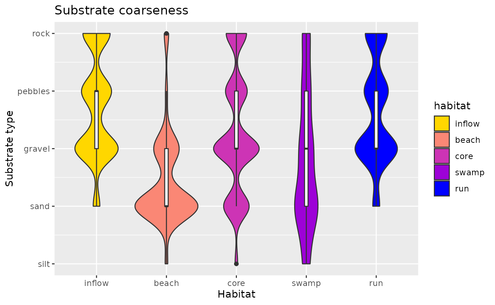

Habitat characteristics
Seba De Bona
DME-010_Habitat_characteristics.RmdOverwiew & Setup
This vignette explores the microhabitat types defined during the Density Manipulation Experiment and determines how different from each other they are based on the hydrological and ecological measures obtained from them.
# loading necessary packages
# for data handling
library(tidyverse)
library(magrittr)
# this requires the package guppyDme to be installed. If the user wishes not to install the package, please comment out the "library(guppyDme)" line and run instead the lines commented out below
#### If you have the guppyDme package installed
# loading package
library(guppyDme)
# #### If you do NOT wish to install the guppyDme package, please uncomment and run the following two lines of code, adding the package functions to the Global Environment and loading the data
# source(file.path(here::here(), "R", "package_functions.R"))
# load(file.path(here::here(), "data", "DMEhabitat.rda"))
# loading data
habitat <- DMEhabitatHabitat exploration
I will here produce some plot to compare microhabitat types and see if they are distninguishable. I am attaching below a figure that depicts the 5 different habitat types, and the position/appearance in a pool.
# scoring habitat to obtain numeric values. Using custom function substrate_score
habitat %<>%
mutate(substrate_score = score_substrate(substrate))
# toggling with the parameter "conflicts"" in score_substrate() is possible to explore how
# only considering finer or coarser substrate type changes results.
# Please see the help documentation for the function.
# some of the habitat definitions are still a combination of many habitats (will be sorted later).
# for now, I will conly consider the 5 main habitat types when they appear alone
habitat %<>%
filter(habitat %in% c("A", "B", "C", "D", "E")) %>%
mutate(habitat = factor(habitat)) # removes empty factor levels
# defining color hues
# from https://projects.susielu.com/viz-palette?colors=[%22#ffd700%22,%22#ffb14e%22,%22#fa8775%22,%22#ea5f94%22,%22#cd34b5%22,%22#9d02d7%22,%22#0000ff%22]&backgroundColor=%22white%22&fontColor=%22black%22&mode=%22normal%22
color_hues <- c(
"#ffd700",
"#fa8775",
"#cd34b5",
"#9d02d7",
"#0000ff")
# Plotting...
# Flow
p1 <- ggplot(habitat, aes(x=habitat, y=flow, fill = habitat)) +
geom_violin(scale = "area")
p1 + ggtitle("Flow across habitats") +
xlab("Habitat") + ylab("Water speed (m/s)") +
geom_boxplot(width=0.05, fill = "white") +
scale_x_discrete(labels = hablab()) +
scale_fill_manual(labels = hablab(), values = color_hues)## Warning: Removed 5 rows containing non-finite outside the scale range
## (`stat_ydensity()`).## Warning: Removed 5 rows containing non-finite outside the scale range
## (`stat_boxplot()`).
# Depth
p2 <- ggplot(habitat, aes(x=habitat, y=depth, fill = habitat)) +
geom_violin(scale = "area")
p2 + ggtitle("Depth across habitats") +
xlab("Habitat") + ylab("Water depth (cm)") +
geom_boxplot(width=0.05, fill = "white") +
scale_x_discrete(labels = hablab()) +
scale_fill_manual(labels = hablab(), values = color_hues)## Warning: Removed 1 row containing non-finite outside the scale range
## (`stat_ydensity()`).## Warning: Removed 1 row containing non-finite outside the scale range
## (`stat_boxplot()`).
# Substrate
p3 <- ggplot(habitat, aes(x=habitat, y=substrate_score, fill = habitat)) +
geom_violin(scale = "area")
p3 + ggtitle("Substrate coarseness") +
xlab("Habitat") + ylab("Substrate type") +
geom_boxplot(width=0.05, fill = "white") +
scale_y_continuous(breaks = c(0,1,2,3,4),
labels = c("silt", "sand", "gravel", "pebbles", "rock")) +
scale_x_discrete(labels = hablab()) +
scale_fill_manual(labels = hablab(), values = color_hues)## Warning: Removed 2 rows containing non-finite outside the scale range
## (`stat_ydensity()`).## Warning: Removed 2 rows containing non-finite outside the scale range
## (`stat_boxplot()`).
# Organic Matter
om <- habitat %>%
group_by(habitat) %>%
summarize(detritus = mean(detritus, na.rm = T),
leaves = mean(leaves, na.rm = T))
om %<>%
gather(key = organic_matter, value = p, detritus, leaves)
ggplot(om, aes(x = habitat, y = p, fill = organic_matter)) +
ggtitle("Organic matter presence") +
xlab("Habitat") + ylab("Proportion present") +
geom_bar(stat="identity", position=position_dodge()) +
ylim(0, 1) +
scale_fill_manual(values=c("#999999", "#339933")) +
scale_x_discrete(labels = hablab())It might be easier to visualize the average (and range of) values for each category in each habitat.
habitat %>%
select(streamID, habitat, depth, flow, substrate_score, detritus, leaves) %>%
gather(key = variable, value = value, depth, flow, substrate_score, detritus, leaves) %>%
group_by(habitat, variable) %>%
summarize(mean_value = mean(value, na.rm = T),
lo_q = quantile(value, 0.025, na.rm = T),
hi_q = quantile(value, 0.975, na.rm = T)) %>%
mutate(mean_value = round(mean_value, 2),
lo_q = round(lo_q, 2),
hi_q = round(hi_q, 2)) %>%
add_column(bl = "[",
br = "]") %>%
unite(range, lo_q, hi_q, sep = " - ") %>%
unite(range, bl, range, br, sep = "") %>%
unite(value, mean_value, range, sep = " ") %>%
spread(key = variable, value = value)## `summarise()` has grouped output by 'habitat'. You can override using the
## `.groups` argument.## # A tibble: 5 × 6
## # Groups: habitat [5]
## habitat depth detritus flow leaves substrate_score
## <fct> <chr> <chr> <chr> <chr> <chr>
## 1 A 11.84 [1.85 - 37.2] 0.04 [0 - 1] 0.32 [0 - 1] 0.05 … 2.71 [1 - 4]
## 2 B 4.9 [0.97 - 13.53] 0.44 [0 - 1] 0.03 [0 - 0.2] 0.18 … 1.42 [0.49 - 4]
## 3 C 15.11 [1 - 43.6] 0.55 [0 - 1] 0.09 [0 - 0.4] 0.25 … 2.27 [1 - 4]
## 4 D 6.37 [0 - 17.3] 0.75 [0 - 1] 0.01 [0 - 0.1] 0.59 … 1.8 [0 - 4]
## 5 E 10.27 [0.58 - 22] 0.24 [0 - 1] 0.2 [0 - 0.7] 0.12 … 2.63 [1 - 4]